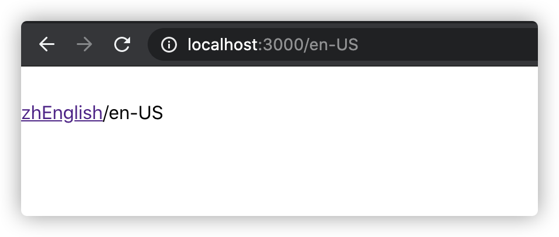

nuxt-i18n 国际化
前言
由于本人的能力有限，如若有说得做的不对的地方，还望指出。当然，如若你有更好的方法，或者更优解，还望不吝赐教。
1、需求
根据需求，现在需要做一个服务端渲染的PC网站。SSR
技术选型：Vue Vue-i18n Nuxt.js elementUI
2、对于Vue-i8n在Nuxt.js中的使用
首先说一下，nuxt.js和我们之前做的SPA单页面应用不一样，做国际化也不一样，之前已经写过在SPA中如何使用国际化，现在再写一下在SSR中如何使用国际化
3、安装vue-i18n
1 | npm install vue-i18n --save |
2 | yarn add vue-i18n --save |
4、在nuxt中引入vue-i18n
在plugins文件夹下创建一个i18n.js文件，并写入如下代码
1import Vue from 'vue'2import VueI18n from 'vue-i18n'34Vue.use(VueI18n)56export default ({ app, store }) => {7app.i18n = new VueI18n({8locale: store.state.locale,9fallbackLocale: 'zh-CN', // 我这里默认语言为中文10messages: {11'en-US': require('@/locales/en-US.json'),12'zh-CN': require('@/locales/zh-CN.json'),13},14})1516app.i18n.path = (link) => {17// 如果是默认语言，就省略18if (app.i18n.locale === app.i18n.fallbackLocale) {19return `/${link}`20}21return `/${app.i18n.locale}/${link}`22}23}
5、在vuex中保存语言的状态
在store页面下创建一个index.js文件
注意：
nuxt.js中如果想要使用vuex的模块化功能，需要使用如下方法，nuxt会自动生成模块化的vuex。
如果不实用模块化，则和vuex的使用没有任何区别
1export const state = () => ({2locales: ['zh-CN', 'en-US'],3locale: '',4})56export const mutations = {7// 此处为设置locale8SET_LANG(state, locale) {9if (state.locales.includes(locale)) {10state.locale = locale11}12},13}
6、在middleware文件夹下新建i18n.js文件用来控制语言的切换
middleware中间件
1export default function ({2isHMR,3app,4store,5route,6params,7error,8redirect,9}) {10const defaultLocale = app.i18n.fallbackLocale11// If middleware is called from hot module replacement, ignore it12if (isHMR) return13// Get locale from params14const locale = params.lang || defaultLocale15if (!store.state.locales.includes(locale)) {16return error({ message: 'This page could not be found.', statusCode: 404 })17}18// Set locale19store.commit('SET_LANG', locale)20app.i18n.locale = store.state.locale21// If route is /<defaultLocale>/... -> redirect to /...22if (23locale === defaultLocale &&24route.fullPath.indexOf('/' + defaultLocale) === 025) {26const toReplace =27'^/' +28defaultLocale +29(route.fullPath.indexOf('/' + defaultLocale + '/') === 0 ? '/' : '')30const re = new RegExp(toReplace)31return redirect(route.fullPath.replace(re, '/'))32}33}
7、在nuxt.config.js文件中进行配置
在上面写好之后，需要在这里进行配置才可以使用
1export default {2/*3** Nuxt rendering mode4** See https://nuxtjs.org/api/configuration-mode5*/6mode: 'universal',7/*8** Nuxt target9** See https://nuxtjs.org/api/configuration-target10*/11target: 'server',12/*13** Headers of the page14** See https://nuxtjs.org/api/configuration-head15*/16head: {17title: process.env.npm_package_name || '',18meta: [19{ charset: 'utf-8' },20{ name: 'viewport', content: 'width=device-width, initial-scale=1' },21{22hid: 'description',23name: 'description',24content: process.env.npm_package_description || '',25},26],27link: [28{ rel: 'icon', type: 'image/x-icon', href: '/favicon.ico' },29{30rel: 'stylesheet',31href: '//at.alicdn.com/t/xxx.css',32},33],34// 头部内容、35},36/*37** Global CSS38*/39css: ['element-ui/lib/theme-chalk/index.css', '@/assets/public.less'],40/*41** Plugins to load before mounting the App42** https://nuxtjs.org/guide/plugins43*/44plugins: [45{ src: '@/plugins/element-ui', ssr: true },46'~/plugins/axios',47+ '@/plugins/i18n.js',48],4950router: {51+ middleware: 'i18n',52},53generate: {54// 这里是指定生成静态文件的路由55+ routes: ['/', '/about', '/zh-CN', '/zh-CN/about'],56},57/*58** Auto import components59** See https://nuxtjs.org/api/configuration-components60*/61components: true,62/*63** Nuxt.js dev-modules64*/65buildModules: [66// Doc: https://github.com/nuxt-community/eslint-module67'@nuxtjs/eslint-module',68],69/*70** Nuxt.js modules71*/72modules: ['@nuxtjs/axios'],73/**74* axios 代理75*/76axios: {77prefix: '/api',78credentials: true,79proxy: true,80},81proxy: {82'/api': {83target: 'xxxx',84pathRewrite: {85'^/api/': '/',86},87changeOrigin: true,88},89},90/*91** Build configuration92** See https://nuxtjs.org/api/configuration-build/93*/94// build: {95// transpile: [/^element-ui/],9697// },98build: {99vendor: ['element-ui'],100babel: {101plugins: [102[103'component',104{105libraryName: 'element-ui',106styleLibraryName: 'theme-chalk',107},108],109],110comments: true,111},112},113}
8、创建本地语言包
根据自己不同的需求，创建不同的语言包，这里只展示一个语言包
新建 local文件夹，创建en-US.json文件
1{2"links": {3"home": "Home",4"about": "About",5"english": "English"6},7"home": {8"index": "index",9"search": "searchs",10"title": "hahah"11},12"about": {13"title": "About"14}15}
9、在page文件夹下创建页面文件
在page页面文件夹下创建_lang文件夹。lang前面的下划线是动态路由的意思，nuxt.js的router路由文件会根据page文件夹自动生成对应的路由文件
下面代码是切换语言的文件代码
创建page/_lang/index.vue
1<template>2<el-container class="bv-example-row main">3<NuxtLink4v-if="$i18n.locale === 'zh-CN'"5:to="{ name: 'lang', params: { lang: 'en-US' } }"6class="Header__Link"7active-class="none"8exact9>10en{{ $t('links.english') }}11</NuxtLink>1213<NuxtLink14v-else15:to="{ name: 'lang', params: { lang: 'zh-CN' } }"16class="Header__Link"17active-class="none"18exact19>20zh{{ $t('links.english') }}21</NuxtLink>22<p>{{ $route.fullPath }}</p>23</el-container>24</template>2526<script>27export default {28head() {29return { title: this.$t('home.title') }30},31components: {},32created() {33console.log(this)34},35}36</script>3738<style scoped>39.main {40margin: 30px auto;41}42</style>43创建page/index.vue
1<script>2import Index from '@/pages/_lang/index'3export default Index4</script>
10、总结
到此 国际化就配置完成了。
运行结果

默认语言URL：http://localhost:3000
非默认语言URL：http://localhost:3000/en-US
如果能够帮助到你，是小编最大的荣幸
当然 有 不好的地方 请大家帮忙指出 学习永无止境
小编一直认为 人外有人 天外有天 一起学习 共同进步
让我们共同加油吧！！！
程序的世界，写作的过程中部分文章难免会参考与借鉴网络上的一些资源、见解。如有侵权请与作者联系。如若如实侵权，文章会在24小时内删除。如若由于部分文章存在侵权行为给您带来不便还请见谅。
本博客仅仅为自己以及前端爱好者提供便利，不做任何商业用途。
原文作者: Yunjie Ge
原文链接: http://www.blog.geyunjie.com/2020/07/07/nuxt-i18n/
版权声明: 转载请注明出处(必须保留作者署名及链接)